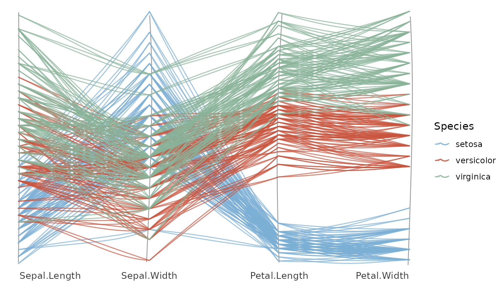

Draws a hand-drawn parallel-coordinates plot: each numeric column in axes
becomes a vertical axis, and every observation becomes a roughened polyline
crossing the axes at its values. Axes are scaled independently to a common
height by default. Like geom_sketch_chord() it is a constructor returning a
list of ordinary sketch layers, so it composes with +; map colour to a
column (add scale_colour_sketch() or any colour scale) and pair with
theme_void() or theme_sketch(). No new dependencies
(cf. GGally::ggparcoord(), MASS::parcoord()).
Usage
geom_sketch_parallel(
data,
axes,
colour = NULL,
...,
scale = "minmax",
line_colour = "#1F618D",
alpha = 0.7,
axis_colour = "grey60",
label = TRUE,
label_size = 3.5,
label_colour = "grey20",
roughness = 1,
bowing = 1,
n_passes = 2L,
seed = NULL
)Arguments
- data
A data frame.
- axes
Character vector of numeric column names to use as axes, in order (at least two).
- colour
Optional column name to colour the lines by (
NULL= one colour). Add a colour scale to style it.- ...
Other arguments passed on to the line layer.
- scale
Per-axis scaling:
"minmax"(default, each axis to[0, 1]) or"none"(raw values; only sensible when the axes share units).- line_colour
Colour used when
colourisNULL. Default"#1F618D".- alpha
Line opacity. Default 0.7.
- axis_colour
Colour of the vertical axes. Default
"grey60".- label
Draw axis labels? Default
TRUE.- label_size, label_colour
Axis-label text controls.
- roughness, bowing, n_passes, seed
Sketch parameters.
See also
Other sketch-geoms:
GeomSketchAbline,
GeomSketchArrow,
GeomSketchBoxplot,
GeomSketchBracket,
GeomSketchCallout,
GeomSketchChicklet,
GeomSketchCol,
GeomSketchContourFilled,
GeomSketchCurve,
GeomSketchDotplot,
GeomSketchDumbbell,
GeomSketchEdge,
GeomSketchEllipse,
GeomSketchEngrave,
GeomSketchGantt,
GeomSketchHex,
GeomSketchLine,
GeomSketchLinerange,
GeomSketchLollipop,
GeomSketchMarkCircle,
GeomSketchMarkHull,
GeomSketchPath,
GeomSketchPoint,
GeomSketchPolygon,
GeomSketchRect,
GeomSketchRibbon,
GeomSketchRug,
GeomSketchSegment,
GeomSketchSfPolygon,
GeomSketchSlope,
GeomSketchSmooth,
GeomSketchSpoke,
GeomSketchTextRepel,
GeomSketchViolin,
StatSketchBeeswarm,
StatSketchCalendar,
StatSketchDensityRidges,
StatSketchFunnel,
StatSketchPie,
StatSketchPyramid,
StatSketchRadar,
StatSketchStream,
StatSketchTreemap,
StatSketchWaffle,
StatSketchWaterfall,
annotate_sketch(),
annotate_sketch_arrow(),
annotate_sketch_callout(),
annotate_sketch_highlight(),
geom_sketch_alluvial(),
geom_sketch_arc_diagram(),
geom_sketch_bin2d(),
geom_sketch_bump(),
geom_sketch_chord(),
geom_sketch_contour(),
geom_sketch_count(),
geom_sketch_dendrogram(),
geom_sketch_density(),
geom_sketch_density2d(),
geom_sketch_ecdf(),
geom_sketch_function(),
geom_sketch_histogram(),
geom_sketch_jitter(),
geom_sketch_marimekko(),
geom_sketch_mosaic(),
geom_sketch_qq(),
geom_sketch_quantile(),
geom_sketch_rose(),
geom_sketch_sunburst(),
geom_sketch_text(),
sketch_graph()
Examples
library(ggplot2)
ggplot() +
geom_sketch_parallel(iris,
axes = c("Sepal.Length", "Sepal.Width", "Petal.Length", "Petal.Width"),
colour = "Species", seed = 1L) +
scale_colour_sketch() +
theme_void()
